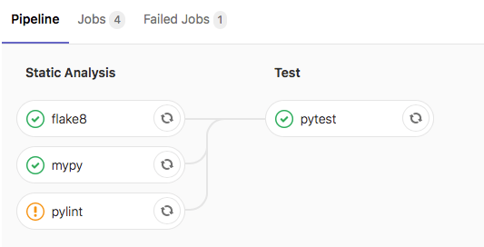
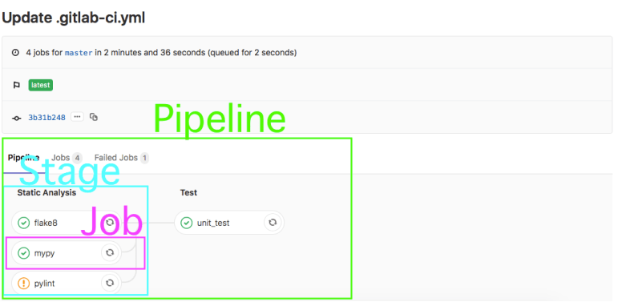

Contents
- Contents
- Abstract
- What is CI?
- Getting Started with GitLab CI
- Creating a Single Job in GitLab CI
- Running Tests with pytest on GitLab CI
- Final GitLab CI Configuration
Abstract
This article describes how to configure a Continuous Integration (CI) process on GitLab for a python application. This article utilizes one of my python applications to show how to setup the CI process.

In this article, I’ll show how I setup a GitLab CI process to run the following jobs on a python application:
- Unit and functional testing using pytest
- Linting using flake8
- Static analysis using pylint
- Type checking using mypy
What is CI?
To me, Continuous Integration (CI) means frequently testing your application in an integrated state. However, the term ‘testing’ should be interpreted loosely as this can mean:
- Integration testing
- Unit testing
- Functional testing
- Static analysis
- Style checking (linting)
- Dynamic analysis
To facilitate running these tests, it’s best to have these tests run automatically as part of your configuration management (git) process. This is where GitLab CI is awesome!
Getting Started with GitLab CI
Before jumping into GitLab CI, here are a few definitions:
- pipeline: a set of tests to run against a single git commit.
- runner: GitLab uses runners on different servers to actually execute the tests in a pipeline; GitLab provides runners to use, but you can also spin up your own servers as runners.
- job: a single test being run in a pipeline.
- stage: a group of related tests being run in a pipeline.

GitLab utilizes the ‘.gitlab-ci.yml’ file to run the CI pipeline for each project. The ‘.gitlab-ci.yml’ file should be found in the top-level directory of your project.
While there are different methods of running a test in GitLab CI, I prefer to utilize a Docker container to run each test. I’ve found the overhead in spinning up a Docker container to be trivial (in terms of execution time) when doing CI testing.
Creating a Single Job in GitLab CI
The first job that I want to add to GitLab CI for my project is to run a linter (flake8). In my local development environment, I would run this command:
flake8 --ignore=E501 project
You can find an accessible description of how to configure flake8 in the official documentation at Configuring Flake8
This command can be transformed into a job on GitLab CI in the ‘.gitlab-ci.yml’ file:
image: "python:3.9-slim"
cache:
paths:
- deps_cache
- venv/
before_script:
- python --version
- python -m venv venv
- source venv/bin/activate
- pip install -r test-requirements.txt --cache-dir deps_cache
stages:
- Static Analysis
flake8:
stage: Static Analysis
only:
- master
- merge_requests
script:
- flake8 --ignore=E501 project
This YAML file tells GitLab CI what to run on merge request and commits pushed up to master. Let’s break down each section…
The first part (image: “python: 3.9-slim”) instructs GitLab CI to utilize Docker for performing ALL of the tests for this project, specifically to use the ‘python:3.9-slim‘ image that is found on DockerHub.
The second part (cache) ised to specify a list of files and directories to cache between jobs. You can only use paths that are in the local working copy. Caching is shared between pipelines and jobs. Caches are restored before artifacts.
The third section (before_script) is the set of commands to run in the Docker container before starting each job. This is really beneficial for getting the Docker container in the correct state by installing all the python packages needed by the application.
The fourth section (stages) defines the different stages in the pipeline. There is only a single stage (Static Analysis) at this point, but later a second stage (Test) will be added. I like to think of stages as a way to group together related jobs.
The fourth section (flake8) defines the job; it specifies the stage (Static Analysis) that the job should be part of and the commands to run in the Docker container for this job. For this job, the flake8 linter is run against the project directory.
Running Tests with pytest on GitLab CI
When I run my unit and functional tests with pytest in my development environment, I run the following command in my top-level directory:
py.test -v tests
This command transformed into a job on GitLab CI in the ‘.gitlab-ci.yml’ file like this:
pytest:
stage: Test
only:
- master
- merge_requests
script:
- py.test -v tests --doctest-modules --cov project --cov-report term --cov-report xml
artifacts:
paths:
- coverage.xml
reports:
cobertura:
- coverage.xml
In this part of the script we also create coverage report and store it in coverage.xml file
Final GitLab CI Configuration
Final script which run pylint, mypy, flake8, pytest, coverage and allow failure of Static Analysis stages looks like this:
image: python:3.9-slim
cache:
paths:
- deps_cache
- venv/
before_script:
- python --version
- python -m venv venv
- source venv/bin/activate
- pip install -r test-requirements.txt --cache-dir deps_cache
stages:
- Static Analysis
- Test
flake8:
stage: Static Analysis
only:
- master
- merge_requests
allow_failure: true
script:
- flake8 --ignore=E501 project
pylint:
stage: Static Analysis
only:
- master
- merge_requests
allow_failure: true
script:
- pylint --fail-under=8 project
mypy:
stage: Static Analysis
only:
- master
- merge_requests
allow_failure: true
script:
- mypy --ignore-missing-imports project
pytest:
stage: Test
only:
- master
- merge_requests
script:
- py.test -v tests --doctest-modules --cov project --cov-report term --cov-report xml
artifacts:
paths:
- coverage.xml
reports:
cobertura:
- coverage.xml
To configure pylint we will use next .pylintrc file:
[MASTER]
init-hook="from pylint.config import find_pylintrc; import os, sys; sys.path.append(os.path.dirname(find_pylintrc()))"
[MESSAGES CONTROL]
# Disable the message, report, category or checker with the given id(s). You
# can either give multiple identifier separated by comma (,) or put this option
# multiple time (only on the command line, not in the configuration file where
# it should appear only once).
disable=C0103
[DESIGN]
# Maximum number of arguments for function / method
max-args=5
# Maximum number of attributes for a class (see R0902).
max-attributes=10
# Maximum number of boolean expressions in a if statement
max-bool-expr=5
# Maximum number of branch for function / method body
max-branches=12
# Maximum number of locals for function / method body
max-locals=15
# Maximum number of parents for a class (see R0901).
max-parents=7
# Maximum number of public methods for a class (see R0904).
max-public-methods=10
# Maximum number of return / yield for function / method body
max-returns=10
# Maximum number of statements in function / method body
max-statements=50
# Minimum number of public methods for a class (see R0903).
min-public-methods=0
Check this resource to find more about pylint messages and they meaning: PyLint Messages
In this article we didnot cover some intersting techincs like testing against different python version with tox, configuring static analysis tools from 1 source of thuth pyproject.toml file and some other cool features, i will try to cover this in next articles.
Comments
comments powered by Disqus